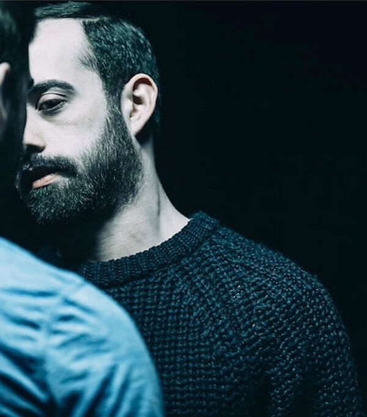

My work adopts a complex, multifaceted structure shaped by my lived experience as a queer, first-generation child of the internet and "third culture kid" raised overseas, as well as my academic training in post-modern Western concert dance. Through these lenses, I investigate the body's entanglement with identity, borders, thresholds, movement, and digitality, drawing on references that range across 2SLGBTQIA+ and popular cultures, post-internet aesthetics, animation, reality television, cinema, and video games. I situate these influences within the broader choreographic histories and theoretical frameworks that shape my practice, asking how the body negotiates conflict, contradiction, and multiplicity — and how to move through the world at the intersection of cultural displacement, digital technology, and queerness.
Trained at L'EDCMTL and then at PARTS, I began my performance career at Dancemakers in 2012 under the direction of Michael Trent, and have been based in Montréal as an independent performer and choreographer since 2015. In 2017, I was awarded a danceWEB Scholarship to attend the ImPulsTanz Festival in Vienna.
My evening-length, iterative solo limbic cum rag was developed through residencies at Dancemakers, Danse Danse Révolution, the Third Floor Residency, and Montréal, Arts Interculturels (MAI), and has been performed in whole or in part at the MAI, SummerWorks Performance Festival, Performance Mix Festival, and the OFFTA. My first group work, fragile & useless, was developed through residencies at The Stable, LA SERRE – arts vivants, and La Chapelle Scènes Contemporaines; it premiered as a co-presentation by La Chapelle and the MAI, with an excerpt also shown as part of Fierté Montréal's out-of-season programming.
I have performed in and contributed to works by Dana Michel, Jassem Hindi, Dancemakers / Michael Trent, Clara Furey, Andrew Tay + Stephen Thompson, Sasha Kleinplatz, Eroca Nicols, Ellen Furey, Public Recordings / Ame Henderson, Benoit Lachambre, Adam Kinner, Mårten Spångberg, Benjamin Kamino, Heidi Strauss, Chris Curreri, Annie MacDonell, Zoja Smutny, Amelia Ehrhardt, Brendan Fernandes, Dora Garcia, and Isabel Lewis — a collaborative history that continues to shape how I approach making and performing
My work has been shown in Toronto, Montréal, New York, Berlin, and Reykjavik, and I'm always looking to expand its reach and connect with new audiences, presenters, and collaborators.
If my work resonates with you, your support means a great deal — you can contribute HERE!